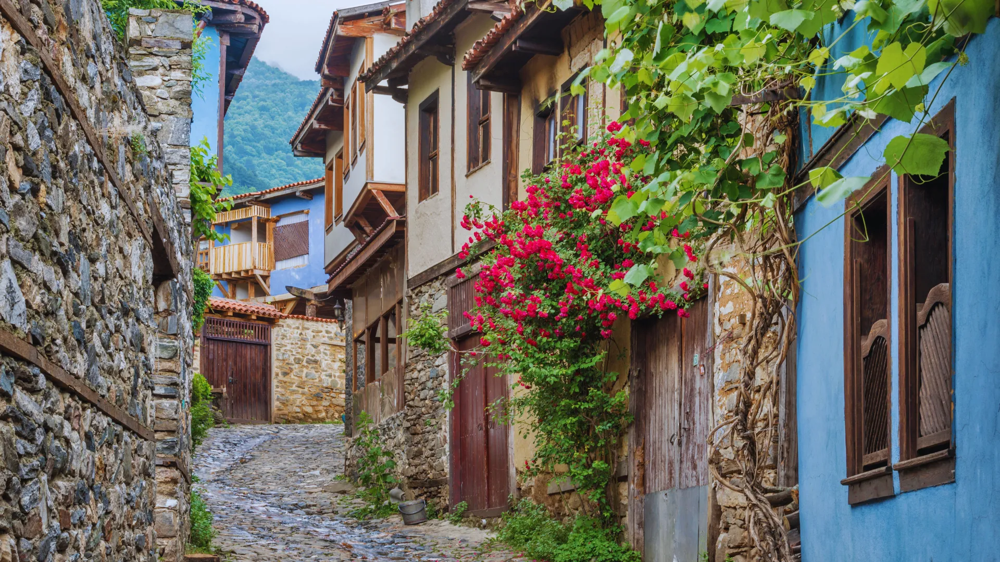
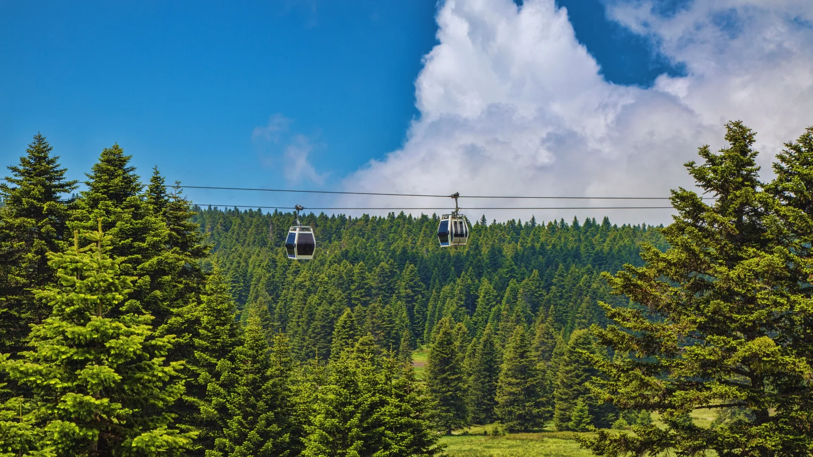

Şehrim: Bursa
Osmanlı'nın ilk başkenti, tarihi dokusu ve eşsiz doğasıyla yeşil Bursa.
BURSA
Türkiye'nin dördüncü büyük şehri olan Bursa, 2026 yılı başı itibarıyla 3.263.011 kişiye ulaşmıştır. Osmanlı İmparatorluğu'na ilk başkentlik yapmış olan bu kadim şehir; aynı zamanda Türkiye'nin otomotiv, tekstil ve sanayi merkezlerinden biridir. "Yeşil Bursa" unvanını taşıyan şehrimiz, hem köklü tarihi hem de eşsiz doğasıyla geçmişten geleceğe uzanan bir kültür hazinesidir.
Bursa'da Gezilecek Yerler
- 📌 Ulu Camii: 20 kubbeli görkemli Osmanlı şaheseri.
- 📌 Uludağ: Türkiye'nin en popüler kış turizmi ve doğa sporları merkezi.
- 📌 Cumalıkızık: UNESCO miras listesinde, 700 yıllık tarihi doku.
- 📌 Koza Han: Tarihi İpek Yolu'nun kalbi ve asırlık ticaret merkezi.
- 📌 Gölyazı: Uluabat Gölü üzerinde, Roma dönemine uzanan şirin yarımada.
- 📌 Tophane: Osman Gazi ve Orhan Gazi türbeleri ile meşhur Saat Kulesi.

Bursa Ulu Camii
Osmanlı mimarisinin en önemli eserlerinden biri olan 20 kubbeli şaheser.

Beyaz Cennet: Uludağ
Türkiye'nin en popüler kış turizmi merkezi ve eşsiz doğa parkı.

Tarihi Cumalıkızık Köyü
UNESCO Dünya Mirası listesinde yer alan, 700 yıllık Osmanlı sivil mimari örneği.

Teleferik
Uludağ'a uzanan dünyanın en uzun hatlı teleferiklerinden biriyle orman manzarası.